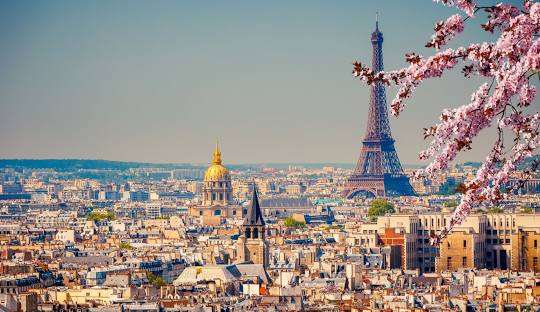
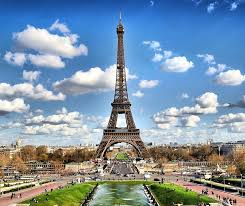

Pariz
Paris (French pronunciation: [paʁi] ) is the capital and largest city of France. With an official estimated population of 2,102,650 residents in January 2023 in an area of more than 105 km2 (41 sq mi), Paris is the fourth-largest city in the European Union and the 30th most densely populated city in the world in 2022. Since the 17th century, Paris has been one of the world's major centres of finance, diplomacy, commerce, culture, fashion, and gastronomy. For its leading role in the arts and sciences, as well as its early and extensive system of street lighting, in the 19th century, it became known as the City of Light.
Excluding the outlying parks of Bois de Boulogne and Bois de Vincennes, Paris covers an oval measuring about 87 km2 (34 sq mi) in area, enclosed by the 35 km (22 mi) ring road, the Boulevard Périphérique.[97] Paris' last major annexation of outlying territories in 1860 gave it its modern form, and created the 20 clockwise-spiralling arrondissements (municipal boroughs). From the 1860 area of 78 km2 (30 sq mi), the city limits were expanded marginally to 86.9 km2 (33.6 sq mi) in the 1920s. In 1929, the Bois de Boulogne and Bois de Vincennes forest parks were annexed to the city, bringing its area to about 105 km2 (41 sq mi).[98] The metropolitan area is 2,300 km2 (890 sq mi).
.jpg)
Measured from the 'point zero' in front of its Notre-Dame cathedral, Paris by road is 450 km (280 mi) southeast of London, 287 km (178 mi) south of Calais, 305 km (190 mi) southwest of Brussels, 774 km (481 mi) north of Marseille, 385 km (239 mi) northeast of Nantes, and 135 km (84 mi) southeast of Rouen.